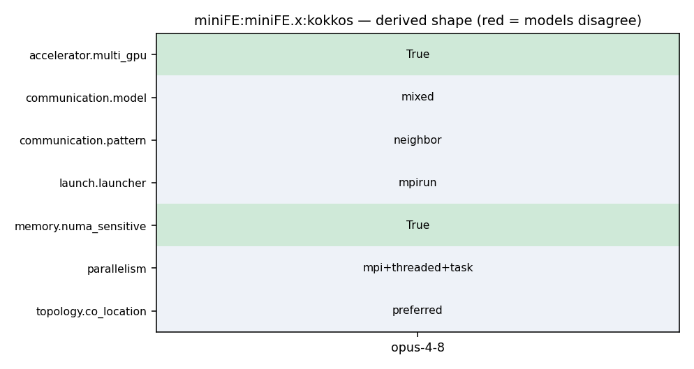

OMP_NUM_THREADS=T mpirun -np N ./miniFE.x -nx <X> -ny <Y> -nz <Z> [num_devices=D device=d numa=1]
76 params.use_elem_mat_fields = Mantevo::parse_parameter<int>(argstring, "use_elem_mat_fields", 1); 77 params.verify_solution = Mantevo::parse_parameter<int>(argstring, "verify_solution", 0); 78 params.device = Mantevo::parse_parameter<int>(argstring, "device", 0); 79 params.num_devices = Mantevo::parse_parameter<int>(argstring, "num_devices", 2); 80 params.skip_device = Mantevo::parse_parameter<int>(argstring, "skip_device", 9999); 81 params.numa = Mantevo::parse_parameter<int>(argstring, "numa", 1); 82 }
53 int use_elem_mat_fields; 54 int verify_solution; 55 int device; 56 int num_devices; 57 int skip_device; 58 int numa; 59 };//struct Parameters
180 #ifdef HAVE_MPI 181 magnitude local_dot = result, global_dot = 0; 182 MPI_Datatype mpi_dtype = TypeTraits<magnitude>::mpi_type(); 183 MPI_Allreduce(&local_dot, &global_dot, 1, mpi_dtype, MPI_SUM, MPI_COMM_WORLD); 184 return global_dot; 185 #else 186 return result;
122 // Post receives first 123 for(int i=0; i<num_neighbors; ++i) { 124 int n_recv = recv_length[i]; 125 MPI_Irecv(x_external, n_recv, mpi_dtype, neighbors[i], MPI_MY_TAG, 126 MPI_COMM_WORLD, &request[i]); 127 x_external += n_recv; 128 }
122 // Post receives first 123 for(int i=0; i<num_neighbors; ++i) { 124 int n_recv = recv_length[i]; 125 MPI_Irecv(x_external, n_recv, mpi_dtype, neighbors[i], MPI_MY_TAG, 126 MPI_COMM_WORLD, &request[i]); 127 x_external += n_recv; 128 }
165 166 for(int i=0; i<num_neighbors; ++i) { 167 int n_send = send_length[i]; 168 MPI_Send(s_buffer, n_send, mpi_dtype, neighbors[i], MPI_MY_TAG, 169 MPI_COMM_WORLD); 170 s_buffer += n_send; 171 }
1 #----------------------------------------------------------------------- 2 SHELL = /bin/sh 3 4 CXX = mpicxx 5 CC = mpicc 6 LINK = mpicxx 7
38 mv_overlap_comm_comp(0), use_locking(0), 39 load_imbalance(0), name(), elem_group_size(1), 40 use_elem_mat_fields(1), verify_solution(0), 41 device(0),num_devices(2),skip_device(9999),numa(1) 42 {} 43 44 int nx;
78 params.device = Mantevo::parse_parameter<int>(argstring, "device", 0); 79 params.num_devices = Mantevo::parse_parameter<int>(argstring, "num_devices", 2); 80 params.skip_device = Mantevo::parse_parameter<int>(argstring, "skip_device", 9999); 81 params.numa = Mantevo::parse_parameter<int>(argstring, "numa", 1); 82 } 83 84 //-------------------------------------------------------------
7 8 # Kokkos Settings: 9 10 KOKKOS_DEVICES = OpenMP 11 KOKKOS_ARCH = SNB 12 13 # MiniFE Settings:
45 override CXXFLAGS += -DMINIFE_INFO=$(MINIFE_INFO) -DMINIFE_KERNELS=$(MINIFE_KERNELS) -DUSE_MPI_WTIME 46 47 #Use MPI 48 override CXXFLAGS += -DHAVE_MPI 49 50 include $(KOKKOS_PATH)/Makefile.kokkos 51
1 #----------------------------------------------------------------------- 2 SHELL = /bin/sh 3 4 CXX = mpicxx 5 CC = mpicc 6 LINK = mpicxx 7
122 // Post receives first 123 for(int i=0; i<num_neighbors; ++i) { 124 int n_recv = recv_length[i]; 125 MPI_Irecv(x_external, n_recv, mpi_dtype, neighbors[i], MPI_MY_TAG, 126 MPI_COMM_WORLD, &request[i]); 127 x_external += n_recv; 128 }